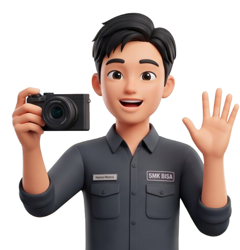
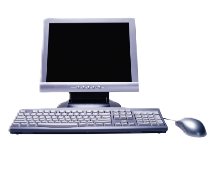
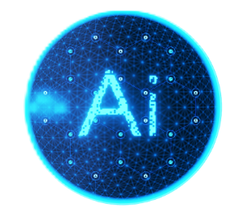
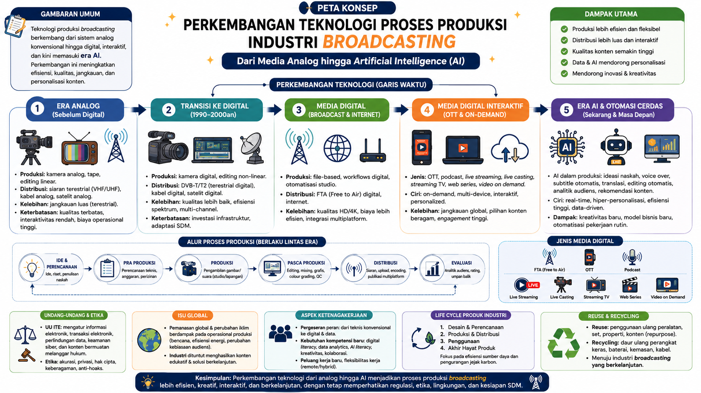
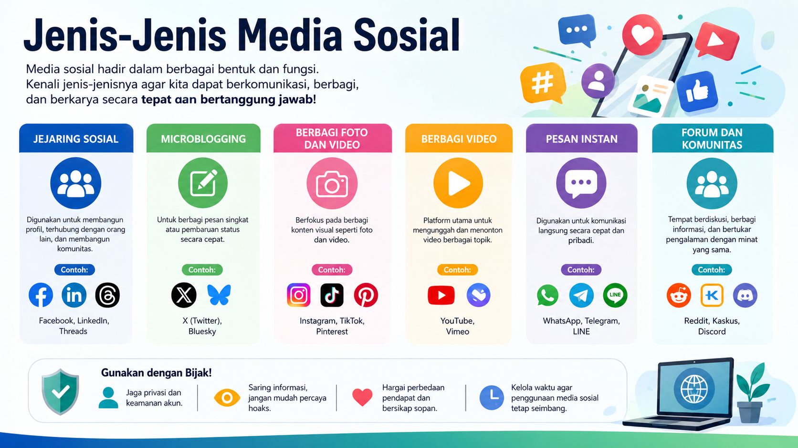
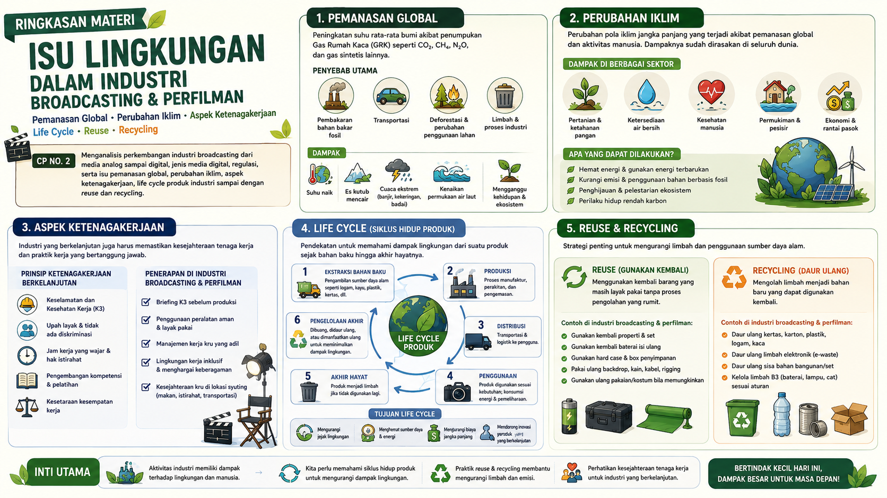
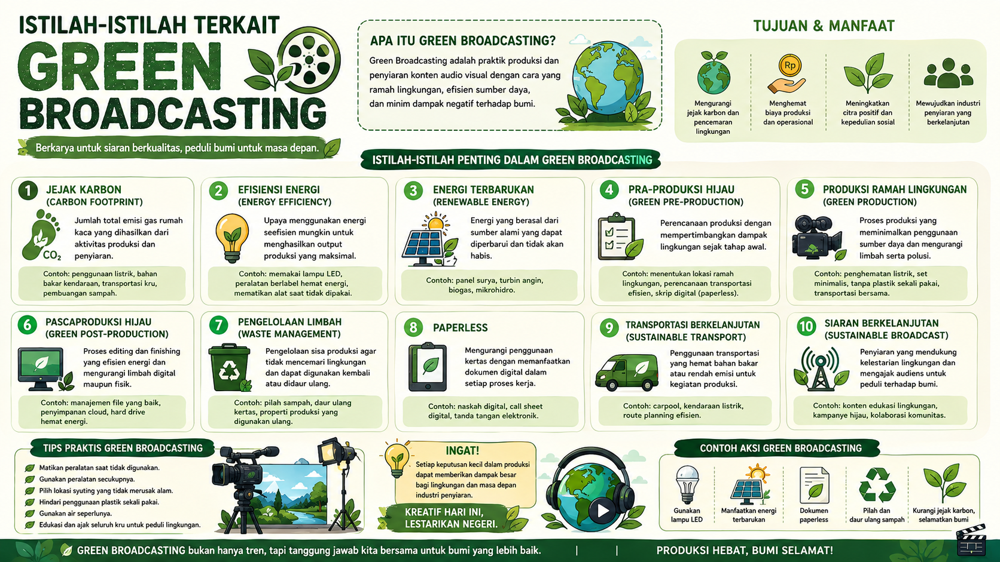

👋 "Pernahkah kamu berpikir bagaimana manusia membuat dan menikmati film dari masa ke masa? Pilih misi yang ingin kamu pelajari di bawah ini!" 🚀
Belum ada tugas selesai
Yuk mulai dari Misi 1! 🚀


Perkembangan Teknologi Broadcasting dan Perfilman

Uji pemahamanmu mengenai transformasi lini masa media broadcasting.
Media Digital & Jenis Media Digital


Cocokkan platform media digital berikut dengan fungsinya untuk melatih ketajaman analisis.
Uji pemahamanmu dalam pemilihan jenis media digital.
Regulasi Media & Artificial Intelligence
"Sebagai editor video TV, Anda dikejar tenggat waktu klip berita. Anda berpikir menggunakan suara kloning AI (Deepfake Voice) tokoh publik tanpa izin resmi agar pekerjaan instan selesai."
Pilih tindakan paling tepat untuk merespons skenario di atas:
Evaluasi pemahaman Anda mengenai payung hukum media penyiaran dan kode etik penggunaan AI.
Green Broadcasting dan lingkungan

Pilih kategori yang tepat untuk skenario tindakan produksi di bawah ini:
Evaluasi pemahaman Anda mengenai siklus hidup produk, penghematan energi, dan efisiensi penyiaran digital.

Virtual Creative Media Project
Susun strategi kampanye edukasi generasi muda peduli lingkungan dengan mempertimbangkan teknologi, media, AI, regulasi, dan Green Broadcasting.
Tentukan keputusan terbaik pada 5 tahap produksi di bawah ini, lalu klik tombol Review untuk melihat evaluasi proyek Anda.
0 dari 5 tahap dipilih

Editing & subtitle, diverifikasi tim.
100% buatan AI, risiko keliru.
Manual, kurang efisien.
Data valid, cantumkan sumber.
Verifikasi dikurangi demi waktu.
Pakai karya orang tanpa hak.
Hemat energi, paperless, reuse.
Hemat energi belum konsisten.
Cetak dokumen & alat sekali pakai.
Evaluasi Keputusan
Klik untuk melihat skor proyek.
🎬 Hasil Proyek: Youth Voice for Green Future
Evaluasi Akhir Pembelajaran
"Halo, kawan-kawan. Kini saatnya membuktikan kemampuanmu. Selamat mengerjakan!"
1. Fungsi utama dari Report Text dalam komunikasi ilmiah atau teknis adalah...
2. Struktur umum (Generic Structure) dari sebuah Report Text terdiri atas...
3. Ciri kebahasaan yang paling dominan digunakan dalam Report Text adalah...
4. Mengapa teks laporan harus menggunakan kata benda umum (General Nouns) seperti "Computers" bukan "My Computer"?
5. Manakah yang termasuk ke dalam bagian "General Classification" pada laporan instalasi listrik?
6. Dalam validasi data menggunakan AI, apa yang dimaksud dengan fenomena "AI Hallucination"?
7. Tindakan terbaik siswa jika menemukan data statistik dari prompt AI yang meragukan adalah...
8. Teknik "Prompt Engineering" yang efektif untuk menyusun Report Text bermutu tinggi harus memuat...
9. Di bawah ini merupakan bentuk pemanfaatan AI yang bijak dalam literasi kritis, yaitu...
10. Mengapa data akurasi kelistrikan sangat penting dimasukkan ke dalam teks laporan siswa SMK?
11. Apa definisi dasar dari gerakan Green Broadcasting di industri penyiaran?
12. Langkah nyata pengurangan limbah fisik pada tahap pra-produksi media digital adalah...
13. Cloud Storage / Komputasi awan mendukung prinsip Green Broadcasting karena...
14. Mengganti lampu pijar studio konvensional dengan lampu teknologi LED merupakan bentuk dari...
15. Tindakan "Reuse" dalam proses pembuatan dekorasi set panggung siber/film tercermin pada...
Kasus Kelompok Kreatif:
Sebuah tim produksi film SMK ingin membuat dekorasi panggung bernuansa lokal. Daripada membeli bahan plastik sekali pakai baru, mereka memilih mengumpulkan dekorasi kayu bekas inventaris sekolah lama dan memodifikasinya menggunakan pencahayaan lampu LED hemat daya.
📊 Hasil Analisis Capaian Ujian
Refleksi & Sertifikat
Luangkan waktu untuk menuliskan pengalaman dan rencana aksimu.
Atas keberhasilan menyelesaikan rangkaian pembelajaran mengenai teknologi, media digital, AI, regulasi, dan Green Broadcasting.
🌱 Pertanyaan Refleksi
Jawablah dengan jujur dan singkat berdasarkan pengalaman belajarmu.
“Selamat, Kawan, Kamu telah berhasil menyelesaikan seluruh misi.”